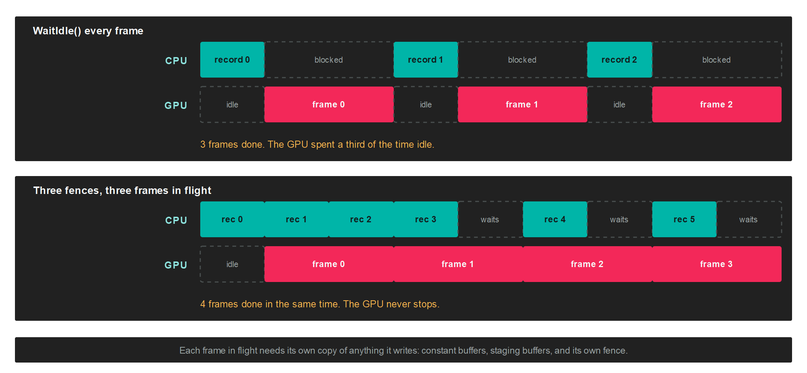

Fence
A Fence is a signal the GPU raises when the work submitted alongside it has finished. The CPU can ask whether it has been raised, or block until it is. It is what lets you know that one particular submission is done, rather than waiting for the whole queue to drain.
Without a fence the only completion signal is CommandQueue.WaitIdle(), which blocks until the GPU has finished everything. That fully serialises the two processors: the CPU records a frame, then does nothing while the GPU draws it, then the GPU does nothing while the CPU records the next one.
Why it matters

With N sets of per-frame resources and N fences, the CPU keeps recording while the GPU stays up to N-1 frames behind, and blocks only when it comes back round to a set the GPU has not released yet.
Note
Measured by FencesTest on an RTX-class GPU at 10,000 draw calls with vertical sync off, replacing WaitIdle with fences raised the frame rate by between 1.8 and 3 times.
Creation
this.frameFences = new Fence[FramesInFlight];
for (int i = 0; i < FramesInFlight; i++)
{
this.frameFences[i] = this.graphicsContext.Factory.CreateFence();
this.frameFences[i].Name = $"Frame fence {i}";
}
A fence with no submitted work pending counts as signaled. That is what lets the first turns of a frames-in-flight loop wait on a fence that has never been submitted, without a special case for the first N frames.
Members
| Member | Description |
|---|---|
| IsSignaled | Whether the GPU has signaled the fence, or nothing is pending on it. Never blocks. |
| Wait(timeoutNanoseconds) | Blocks the calling thread until the fence is signaled or the timeout elapses. Returns false on timeout. Waits forever by default. |
| Reset() | Returns the fence to the unsignaled state so it can be submitted again. Has no effect when nothing is pending. |
| Name | A debug name, shown in graphics debugging tools. |
Fence derives from GraphicsResource, so it also carries NativePointer, Context and Dispose.
The loop
A fence is signaled by passing it to Submit, and there is no method that signals one from the CPU:
var frameFence = this.frameFences[this.frameIndex % FramesInFlight];
frameFence.Wait();
frameFence.Reset();
var commandBuffer = this.commandQueue.CommandBuffer();
commandBuffer.Begin();
// ...record the frame...
commandBuffer.End();
commandBuffer.Commit();
this.commandQueue.Submit(frameFence);
this.frameIndex++;
The order matters and is not obvious:
Wait()before recording, not after submitting. You are waiting for the frame that used this slot N frames ago, so that its resources are free to overwrite.Reset()immediately after the wait, while nothing is pending on the fence.Submit(fence)on a fence that is already reset.
Important
The fence passed to Submit has to be unsignaled. Submitting one that was never reset leaves you waiting on a fence that is already signaled, which returns at once and gives you no synchronisation at all. The failure is silent, and looks like corrupted geometry or flickering rather than like a hang.
Submit() with no argument still works and passes null, which submits without signaling anything.
Polling instead of blocking
IsSignaled never blocks, so it suits work that can be picked up whenever it happens to be ready, such as a screenshot readback or an occlusion query result:
if (this.readbackFence.IsSignaled)
{
var mapped = this.graphicsContext.MapMemory(this.stagingBuffer, MapMode.Read);
// ...consume the data...
this.graphicsContext.UnmapMemory(this.stagingBuffer);
this.readbackFence.Reset();
}
Wait also takes a timeout in nanoseconds, and returns false when it expires rather than throwing:
if (!this.frameFence.Wait(2_000_000_000))
{
// Two seconds without the GPU finishing. Something is wrong.
}
What a fence is not
It synchronises the GPU with the CPU, in one direction, for one batch. It is not a general purpose primitive:
- Binary, not a timeline. There are no counters and no values to wait on. A fence is signaled or it is not.
- No GPU to GPU waiting. Two CommandQueue objects cannot be ordered against each other with a fence. The CPU has to wait on the first and then submit to the second.
- The GPU signals, never you. There is no
Signalmethod. A fence changes state only throughSubmitandReset.
Per-backend behaviour
The primitive is the same everywhere, but two backends behave differently enough to matter:
| Backend | Implementation |
|---|---|
| DirectX 12 | A native fence signaled with an increasing value, waited on through an event. |
| Vulkan | A native fence handle, passed into the queue submission. |
| DirectX 11 | An event query placed behind the submitted work, polled by yielding. |
| OpenGL | A sync object, waited on with a client wait. |
| Metal | An empty command buffer committed with a completion handler, which costs one extra submission. |
| WebGPU | A submitted-work-done callback. |
Warning
A platform whose main loop must not be blocked, a browser being the usual one, returns the current state instead of waiting. Poll IsSignaled across frames rather than calling Wait, and the same code then behaves the same everywhere.
Frames in flight need duplicated resources
A fence tells you when a frame is done. It does not stop you from overwriting data that frame is still reading. Everything the CPU writes per frame needs one copy per frame in flight:
- Constant buffers updated each frame.
- Staging and upload buffers.
- The fences themselves, one per slot.
Resources that never change after loading, such as vertex buffers, textures and pipelines, are shared by every frame and need no duplication.
Tip
Three frames in flight is a common starting point. More adds latency between input and image without adding throughput once the GPU is saturated, and each one costs another copy of every per-frame resource.
Cleaning up
Wait for the fence before disposing anything the submission it tracks might still be using:
foreach (var fence in this.frameFences)
{
fence.Wait();
fence.Dispose();
}